CSAL: the Next-Gen Local Disks for the Cloud
EuroSys ’24
attention
memory
systems
networking
serving
CSAL: the Next-Gen Local Disks for the Cloud
Background and Motivation
Cloud Local Disk

There are trend that customers choose cloud local disks for their VMs for higher performance.
- Disks are local to the host. (not cloud disk attached through network)
- Logical Volume Manager (LVM) wraps local disks as multiple logical disks.
- VMs can subscribe and mount logical disks.
Cloud Local Disk: Resource granularity
- Cloud vendors usually set a proportion of the whole physical resources as the finest granularity.
- The user can subscribe one or multiple such proportion(s), to avoid oversubscription.
- For example,
- AWS D3.xlarge has 4 vCPUs, 32GB memory and 6TB local disk (3x2TB HDDs)
- AWS D3.8xlarge has 32 vCPUs, 256GB memory and 48TB local disk (24x2TB HDDs)
Cloud Local Disk: Resource granularity
- However, the capacity of local disk multiplies, the performance doesn’t.
- The storage performance of local disks cannot catch up with multiplied computing resources.
Cloud Local Disk: Challenges
- Recent datacenter-grade CPUs has more and more cores.
- Cloud vendors can now provide more VM instances.
- Easy to add more memory
- Challenging to scaling up both the capacity and performance of the storage.
- Western Digital’s 22TB CMR HDD still provides 250MB/s bandwidth, similar to its 8TB SKU and earlier products.
- NVMe SSDs provide enough performance but the capacities are limited. => higher cost
High-density NAND Flash SSDs
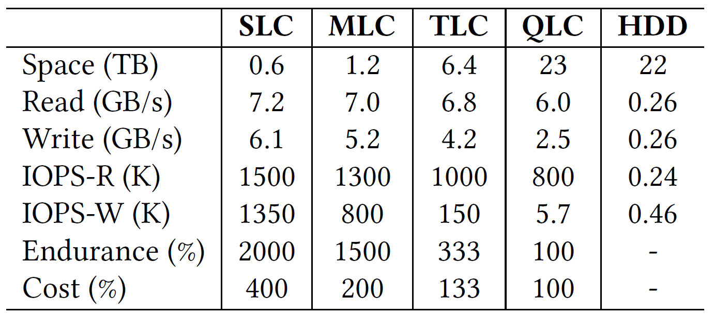
- NAND density has gradually increasing from SLC to QLC.
- QLC-based SSDs:
- comparable capacities to HDDs
- 10x higher throughput
Preliminary Attempts
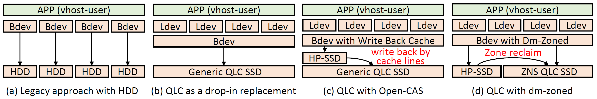
- Lagacy approach: 8x2TB HDDs
- Drop-in replacement: 1 QLC SSD to replace 8 HDDs
- QLC with Open-CAS
- QLC with dm-zoned
Evaluation
- 8 VMs, each with 7 vCPUs and 28GB memory
- Each VM is assigned with one logical device.
- FIO inside VMs
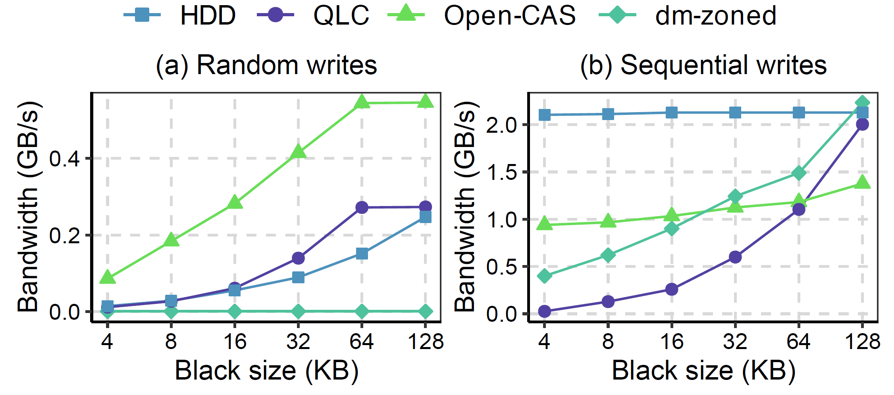
Analysis of Attemp 1 Drop-in Replacement
- Bad performance
- NAND-level write amplification
- frequent small writes => significant amplification triggered by GC
- sharing the same QLC SSD causes different data with different lifespans to be stored in the same erase block
Analysis of Attemp 1 Drop-in Replacement
- Bad performance
- Device-level write amplification
- Large capacity: large L2P table
- QLC SSDs usually adopt a much larger indirection unit size (64KB vs. 4KB in TLC SSDs)
- Miss-sized or Miss-aligned write causes amplification
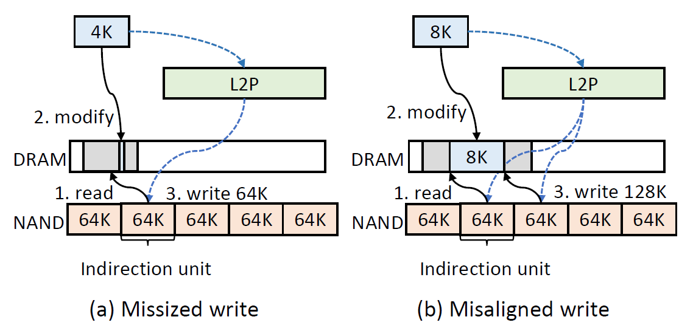
Analysis of Attemp 1 Drop-in Replacement
- Bad performance
- NAND-level write amplification
- frequent small writes => significant amplification triggered by GC
- sharing the same QLC SSD causes different data with different lifespans to be stored in the same erase block
- Device-level write amplification
- Large capacity: large L2P table
- QLC SSDs usually adopt a much larger indirection unit size (64KB vs. 4KB in TLC SSDs)
- Miss-sized or Miss-aligned write causes amplification
- Endurance
Analysis of Attemp 2 Write-Back Cache
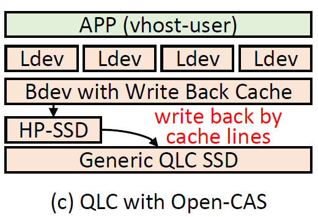
- Use a high performance SSD (HP-SSD) as write-back cache to absorb small writes
- HP-SSD: Intel P5800X, 800GB
- 64KB cache granularity
Analysis of Attemp 2 Write-Back Cache
- Good random performance, still bad seqential throughput
- High cost
Analysis of Attemp 3 ZNS-based Solution
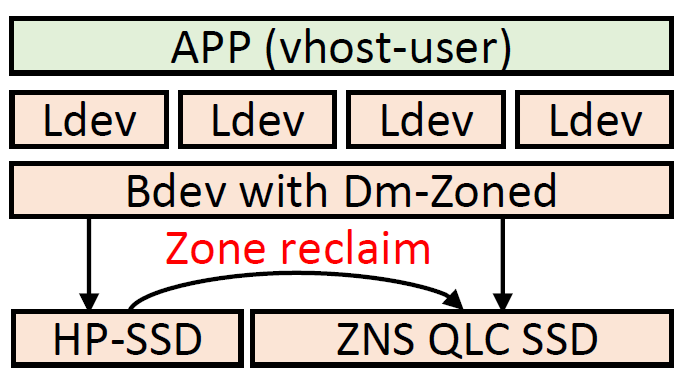
- Linux dm-zoned to manage mapping tables in the host
- a series of random zones backed by HP-SSD
- a series of sequential zones backed by ZNS-SSD
- Seq writes directly go to sequential zones
- Random write first go to random zones, later migrated to sequential zones in bulk (an entire zone).
Analysis of Attemp 3 ZNS-based Solution
- Small sequential writes can be merged in write-back cache solution
- Directly appending large sequential writes to sequential zones avoid paying extra effort
- 10MB/s random write throughput
- One-by-one zone migration design in Linux dm-zoned
- Under high-pressure workloads, the dm-zoned would be constantly busy with migrating zones.
Design
Overview
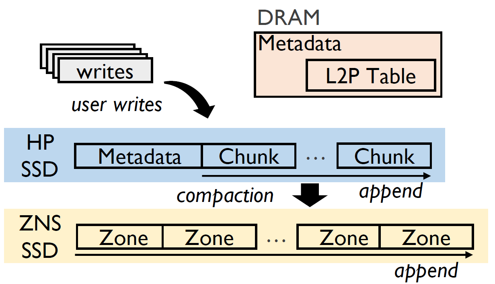
- Two-level L2P table for fine-grained address mapping on ZNS SSDs
- Fast and highly endurable SSD as a log-structured write cache to aggregate data and flush to underlying ZNS QLS SSDs
- Mapping page with 4KB granularity to alliviate device-level WA
- CSAL groups data with similar lifespans to QLC SSDsm reducing NAND-level WA
Two-Level L2P table
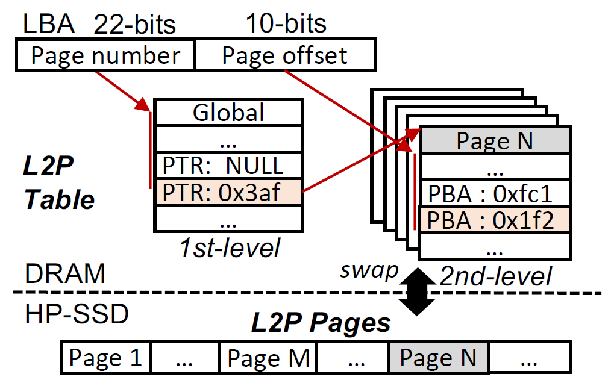
- A 16TB SSD requires 32MB first-level table and 16GB second-level tables.
- The first level table constantly resides in host memory.
- Second level tables are cached in memory (2GB).
CSAL Data Flow
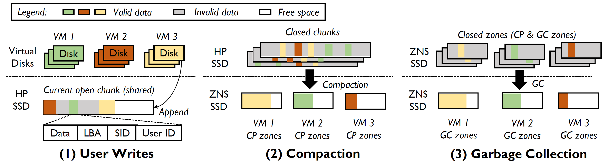
- User writes: append to current open chunk of log-structured write cache.
- Compaction: aggregate valid data by VMs and then flush to isolated zones of QLC.
- Garbage collection: reclaim zone spaces by VMs.
On-disk Layout of HP-SSD
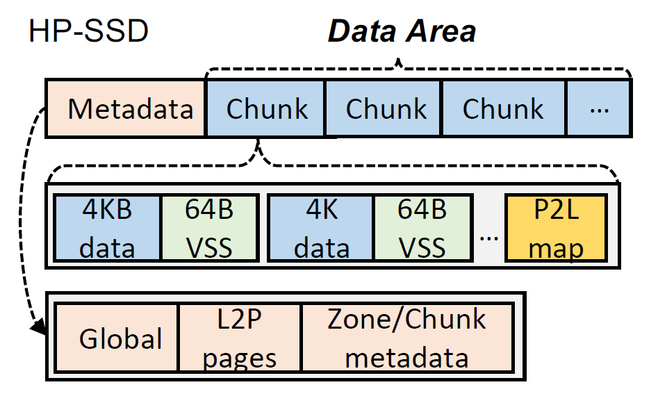
- VSS contains:
- SID
- Chunk status: open/close/free
- LBA
- Only one chunk is open for write anytime
Runtime metadata
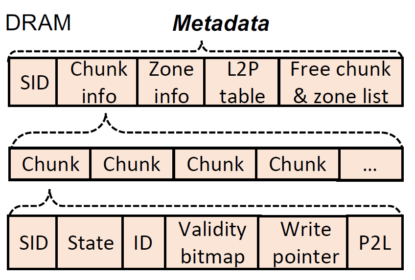
- Free chunk list
- Current open chunk’s P2L to speedup compaction and crash recovery
Crash consistency
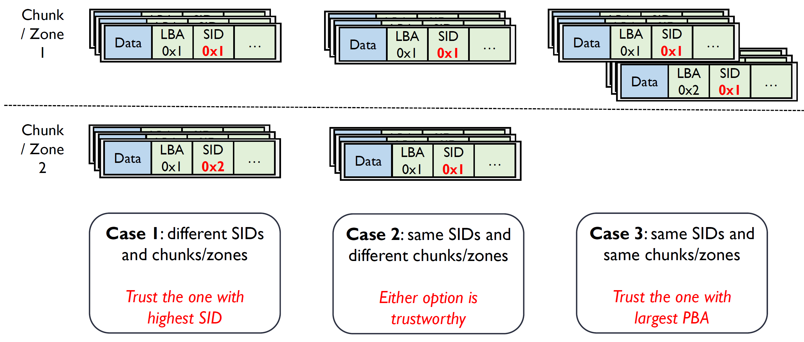
- Case 1: an earlier version in QLC SSD and an updated version in the open chunk of HP-SSD
- Case 2: crash during compaction
- Case 3: frequent updates on the same LBA
Crash recovery optimization
- P2L table after one chunk is filled up
- Checkpoint
Evaluation
Environment Setup
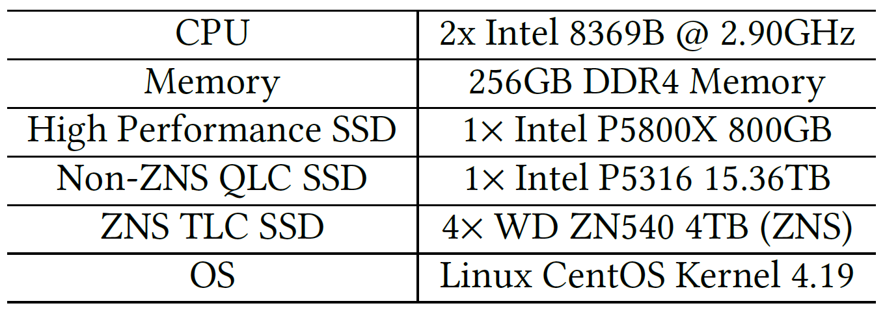
- Software:
- 8 VMs, each owns one 2TB logical device
- Hypervisor: QEMU + Vhost-NVMe
- FIO
- Implementation:
- Non-ZNS QLC SSD uses SPDK’s zone bdev functionality
- CSAL is implemented as a SPDK bdev
- it has been merged into SPDK mainline
Uniform Writes
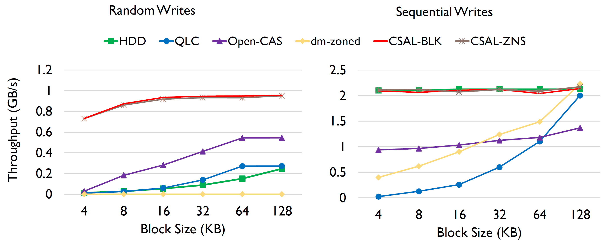
- Higher performance under random writes than all candidates.
- Comparable performance as HDDs under sequential writes.
Skewed Writes
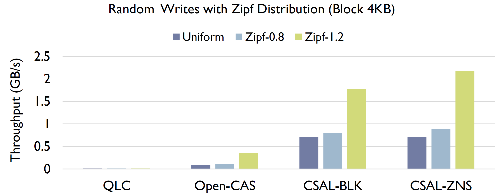
- Up to 6x higher performance compared to Open-CAS under Zipf 1.2 (heavy skewed).
- Open-CAS suffers performance loss due to large granularity of indirection units (64K).
Write Amplification
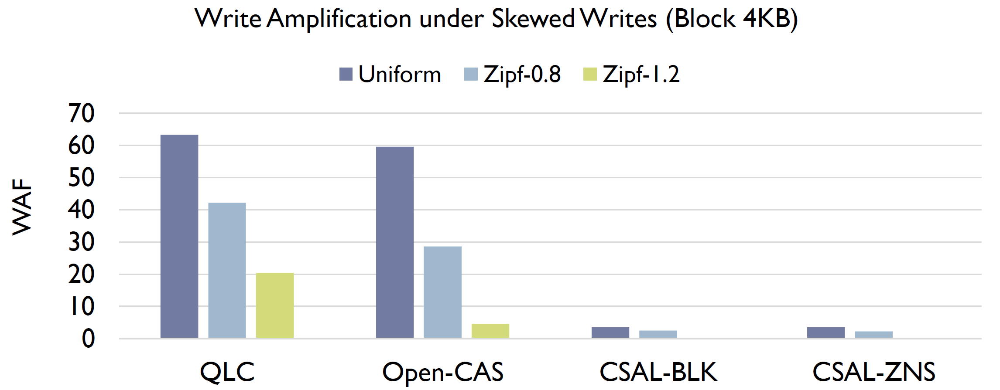
- More skewed distribution leads to less data flushed to underlying QLC.
- Raw QLC and Open-CAS are bounded by 64K indirection units (device-level WA).